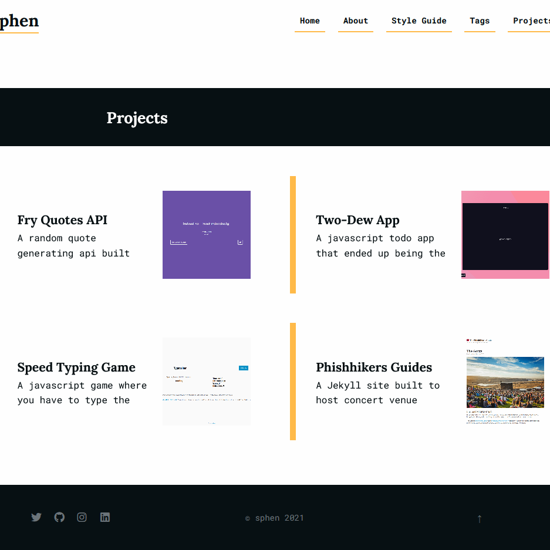

SphenCode
WebDev Sidekick
Originally created by Mom and Dad to serve as a junior counterpart to the superhero HTML. The team of HTML and Sphen is commonly referred to as the Binary Duo or the Caped Coders.
WebDev Sidekick
Originally created by Mom and Dad to serve as a junior counterpart to the superhero HTML. The team of HTML and Sphen is commonly referred to as the Binary Duo or the Caped Coders.